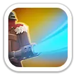
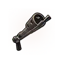
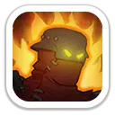

Огни возмездия
Активный навыкОгнемёт Флинта наносит повторяющийся урон и на короткое время увеличивает получаемый целью урон.
Ур. 1–5: 60 / 66 / 72 / 78 / 84% атаки каждые 0,5 с; цель получает +10 / +15 / +20 / +25 / +30% урона

Огненный фронтовик · пехотный герой 2 поколения
Флинт — мифический герой пехоты 2 поколения и один из самых заметных апгрейдов ранней пехотной линии. Он сочетает хорошую живучесть в Освоении с сильными бонусами к урону пехоты и общей атаке войск в Экспедиции. В 2026 году его первый навык Экспедиции особенно ценен для присоединения к атакующим сборам и Свирепому медведю.
Максимальные показатели героя без внешних усилений.
Работают в боях героев, включая Освоение и Арену.

Огнемёт Флинта наносит повторяющийся урон и на короткое время увеличивает получаемый целью урон.
Ур. 1–5: 60 / 66 / 72 / 78 / 84% атаки каждые 0,5 с; цель получает +10 / +15 / +20 / +25 / +30% урона
Когда здоровье Флинта падает ниже 50%, он один раз за бой мгновенно восстанавливает часть максимального здоровья.
Ур. 1–5: 20 / 25 / 30 / 35 / 40% максимального здоровья
Повышает скорость атаки всех ваших героев в бою.
Ур. 1–5: +3 / +4 / +5 / +6 / +7% скорости атаки
Актуальная механика 2026 года.
Повышает наносимый пехотой урон. Именно этот навык работает у Флинта как первый навык героя при присоединении к чужому сбору.
Ур. 1–5: +20 / +40 / +60 / +80 / +100% наносимого пехотой урона
Постоянно повышает атаку всех войск в отряде.
Ур. 1–5: +5 / +10 / +15 / +20 / +25% атаки
Постоянно повышает смертоносность всех войск.
Ур. 1–5: +5 / +10 / +15 / +20 / +25% смертоносности

Драконья погибель
Эксклюзивное снаряжение Флинта. На максимальном уровне заметно усиливает его живучесть и боевую ценность.

Очень сильный герой для присоединения к сбору благодаря «Пироману» в первом слоте.
Отличный участник сбора: первый навык напрямую усиливает урон пехоты.
Сильный пехотный герой 2 поколения для собственного марша благодаря атаке, смертоносности и высоким статам.
Живучий фронтовик: восстанавливает здоровье, ускоряет союзников и усиливает урон по цели.
Флинт — один из наиболее полезных героев 2 поколения: он заметно усиливает пехоту, хорошо держит фронт и остаётся ценным участником атакующих сборов. Для F2P и умеренных донатеров особенно выгодно брать его через Колесо удачи. Глубоко вкладываться в эксклюзивное снаряжение стоит прежде всего тем, кто активно играет PvP и планирует долго использовать Флинта в основном марше.
Данные сверены по русской странице героя и нескольким актуальным базам 2026 года.